Zuerst machen uns mit der Synthesizer-Software REAKTOR etwas vertraut - eine Übersicht mit ersten Arbeitsschritten, findet sich hier
(allerdings noch bezogen auf REAKTOR Version 2.3 !!!). Die folgendethesizer-Struktur werden wir in den nächsten Arbeitspu Synnkten aufbauen.
Einfache Schwingungsformen: Zunächst brauchen wir nur ein PitchGate und einen Oszillator. Im Ensemble-View fügen wir ein Oszilloskop ein, mit dem wir das Zeitsignal des Klangs darstellen können. Nun schauen wir uns die Wellenformen der Grundklänge des Oszillators an (Sägezahn, Rechteck, etc.). Wir können nun Beispiele der einzelnen Klänge in Reaktor aufzeichnen. Über das Menü "View->Show Recorderbox" exportieren wir die Klänge als wav und lesen sie in GRAM über 'Scan File' ein. Um das Spektrum anzuzeigen, müssen wir den Display-Type "Line" auswählen. Es erscheint eine Liniendarstellung des Amplitudenspektrums mit dB-Angaben (Toggle Grid). Aus diesen können wir dann lineare Prozentwerte mit Bezug auf die Grundschwingung berechnen. Wir setzen dazu die Grundschwingung mit 0 dB entspr. 100 % an. Variiere die Pulsweite (d.h. das zeitl. Verhältnis zwischen positivem und negativem Schwingungsteil) bei der Rechteckschwingung (Regler `P-Width´ am Oszillator) und beobachte, wie sich das Verhältnis der Obertöne verändert. (Ins Ergebnisprotokoll: Bilder der Spektren für drei markante P-Width-Einstellungen beim Rechteck, ein Sägezahn, ein Dreieck, Ausschnitte aus den wavs, Angaben der Frequenzen und Amplituden in dB und Prozentwerten für die Grundschwingung und die ersten drei Obertöne, bei denen die Amplitude größer 0 ist).
Lösung
Schaltung:
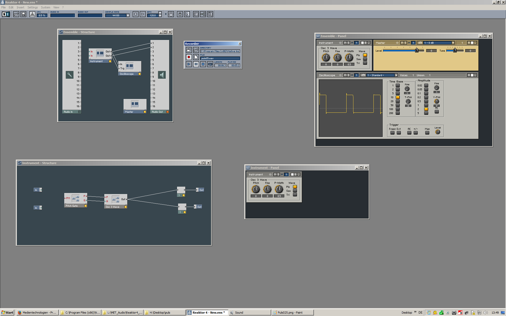Aufnahme Rechteck mit P-Width 0,5
Gram Screenshot:
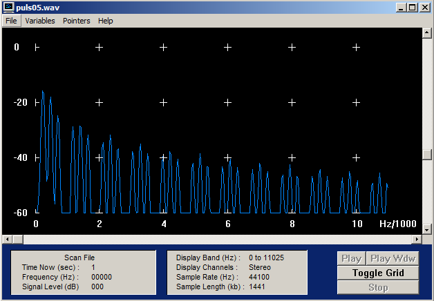| Frequenzen Hz | Amplitude in dB | Differenz | Prozentwert | |
|---|---|---|---|---|
| f0 | 237 | 4 | -3 | ~71% |
| f1 | 474 | 1 | -7 | ~45% |
| f2 | 668 | -6 | -4 | ~63% |
| f3 | 1141 | -10 | -1 | ~89% |
Aufnahme Rechteck mit P-Width 0,75
Schaltung:
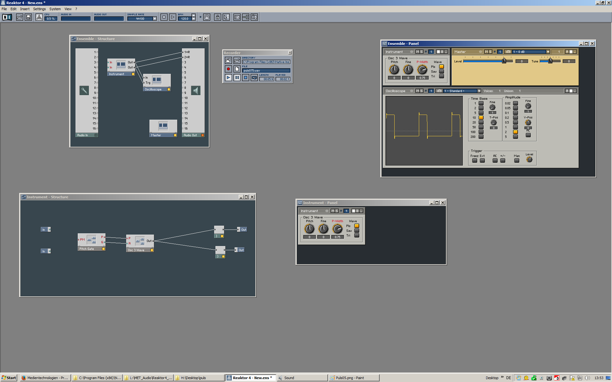Gram Screenshot:
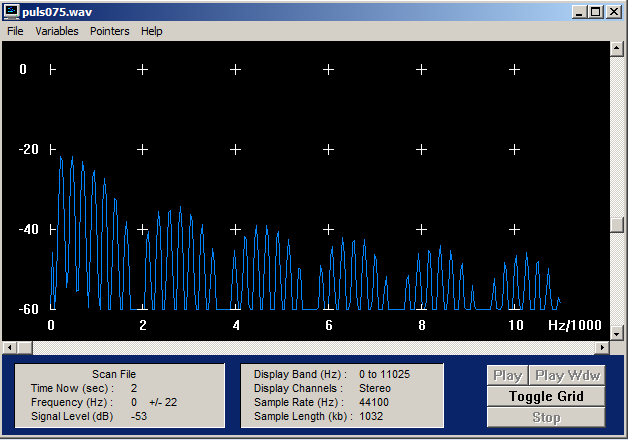| Frequenzen Hz | Amplitude in dB | Differenz | Prozentwert | |
|---|---|---|---|---|
| f0 | 452 | -22 | 0 | 100% |
| f1 | 711 | -24 | -2 | ~79% |
| f2 | 947 | -26 | -2 | ~79% |
| f3 | 1184 | -28 | -2 | ~79% |
Aufnahme Rechteck mit P-Width 0,25
Schaltung:
Gram Screenshot:
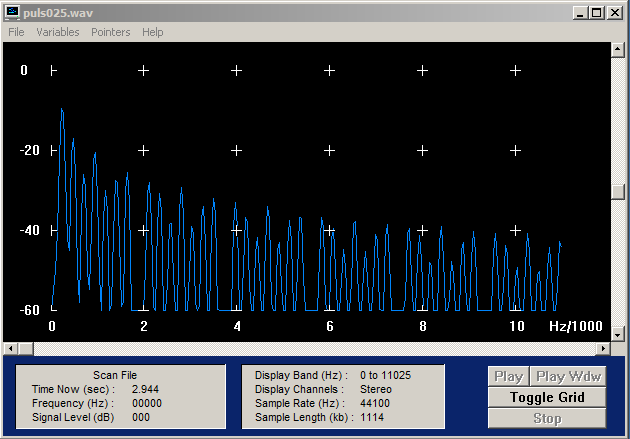| Frequenzen Hz | Amplitude in dB | Differenz | Prozentwert | |
|---|---|---|---|---|
| f0 | 194 | 6 | -8 | ~40% |
| f1 | 474 | -2 | -9 | ~35% |
| f2 | 689 | -11 | -5 | ~56% |
| f3 | 947 | -6 | -9 | ~35% |
Aufnahme Segezahn:
Schaltung:
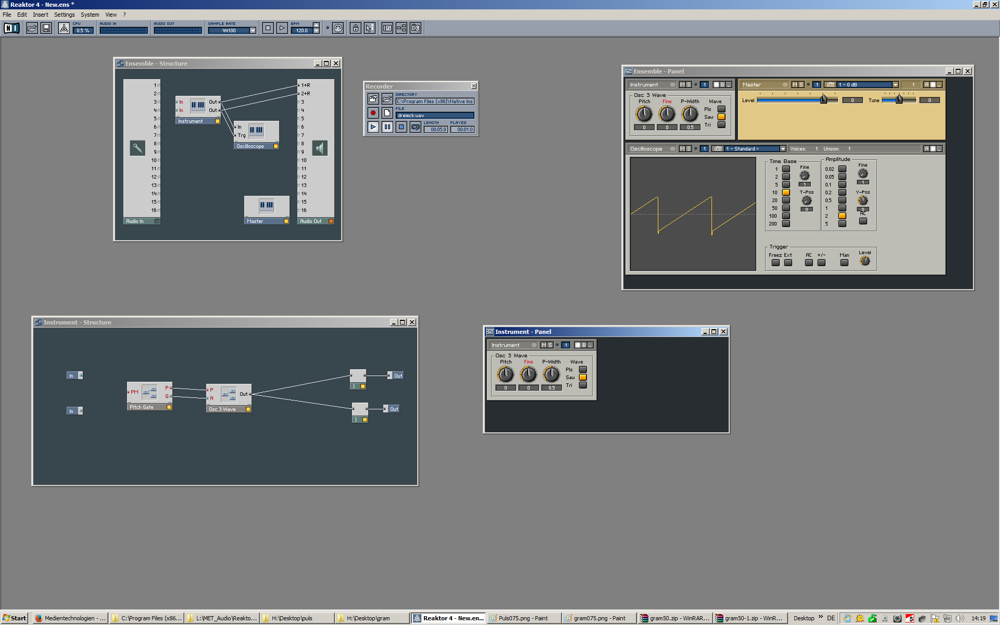Gram Screenshot:
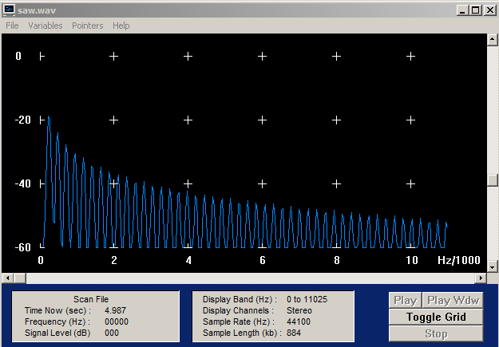| Frequenzen Hz | Amplitude in dB | Differenz | Prozentwert | |
|---|---|---|---|---|
| f0 | 194 | -19 | -5 | ~56% |
| f1 | 474 | -24 | -3 | ~71% |
| f2 | 689 | -27 | -4 | ~63% |
| f3 | 969 | -31 | -1 | ~89% |
Aufnahme Dreieck
Schaltung:
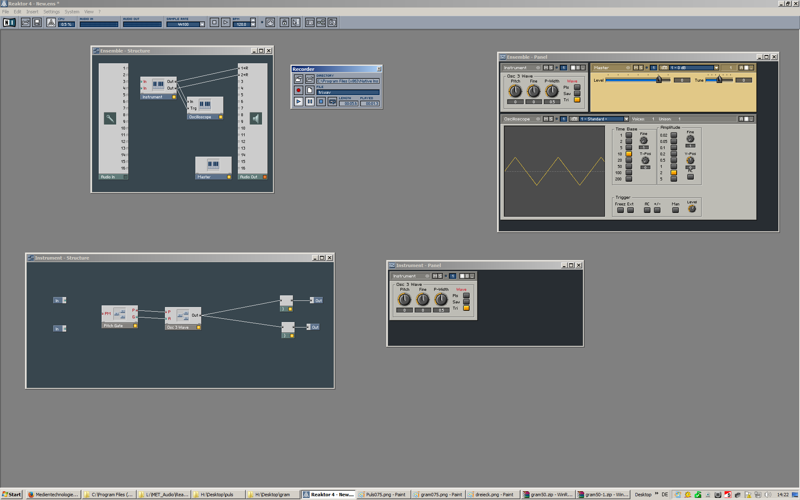Gram Screenshot:
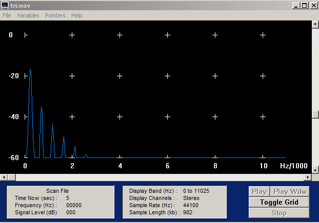| Frequenzen Hz | Amplitude in dB | Differenz | Prozentwert | |
|---|---|---|---|---|
| f0 | 237 | -17 | -18 | ~13% |
| f1 | 689 | -35 | -8 | ~35% |
| f2 | 1163 | -43 | -6 | ~50% |
| f3 | 1658 | -49 | -5 | ~56% |
Die Formel zu Berechnung der Prozentwerte
d = Differenz | p = Prozentwert
d = 20 * log(p /100) | umstellen nach p
| : 20
d /20 = log(p /100) | 10^( )
10^(d / 20) = p /100 | * 100
p = 100 * 10^(d /20)
Schwebung: Nun bringen wir einen zweiten Oszillator zum Einsatz. Um die Ausgänge der beiden Oszillatoren anschließen und in der Lautstärke regeln zu können, benötigen wir eine Mixing Matrix 2x2, von der wir allerdings den zweiten Ausgang löschen können. Zunächst stellen wir beide Oszillatoren auf exakt dieselbe Frequenz und Dreiecksschwingung. Dann verstimmen wir den zweiten gegen den ersten und zeichnen den Klang auf, wenn wir gerade eine Amplitudenmodulation feststellen (Fall A), d.h. einen in der Lautstärke schwankenden Ton. Wir verstimmen die Oszillatoren weiter gegeneinander, bis wir den Eindruck einer Dissonanz haben (Fall B), d.h. es entsteht ein rauher, unangenehmer Klang.
Nun stellen wir mit GRAM für die beiden Fälle die Mittel- und Differenzfrequenzen der Schwingungen fest. Es kann sein, dass die Genauigkeit von GRAM beim Fall A zur Bestimmung der Differenzfrequenz nicht ausreicht. Man kann die Differenzfrequenz aber auch aus dem Oszillogramm der amplitudenmodulierten Schwingung berechnen (z.B. in Samplitude anschauen). Die Periodendauer entspricht nämlich exakt dem Abstand zwischen zwei Punkten maximaler (oder minimaler) Amplitude. Ins Ergebnisprotokoll für beide Fälle: Mittenfrequenz und Differenzfrequenz, Spektrogramm und wav.
Lösung
Fall A
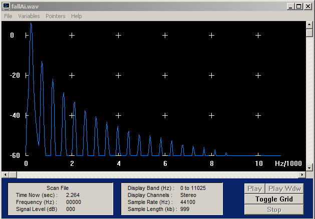Messungen:
659ms=0,659s
59ms=0,059s
Mittenfrequenz: 1/0,059s=16,9Hz
Differenzsequenz: 1/0,659s=1,517Hz
Aufnahme
Fall B
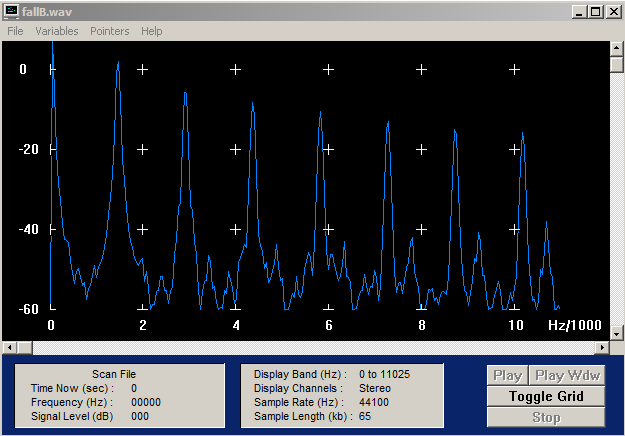Messungen:
16ms=0,016s
9ms=0,009s
Mittenfrequenz: 1/0,009s=111,3Hz
Differenzsequenz: 1/0,016s=62,5Hz
Aufnahme
Klangnachbildung: Wir wollen nun versuchen, selber einen coolen Klang zu kreieren. Die einzigen Anforderungen sind, dass die Grundfrequenz bei 220 Hz liegen soll, was einem A entspricht, und dass es ein monophoner Klang ist, d.h. dass nur eine Taste gedrückt wird und eine Note erklingt. Da es etwas schwierig ist, die Frequenz exakt zu bestimmen, hier der Hinweis, dass wenn alle Pitch-Regler auf 0, d.h. in Mittelstellung sind, beim Drücken der Taste "N" die Grundfrequenz des Oszillators etwa 220 Hz beträgt. Zunächst wählen wir die Grundwellenform (Rechteck, Sägezahn, etc.), die klanglich am besten zu unserem Instrument paßt (auch mit dem Filter experimentieren ! ).
Um die Hüllkurve entsprechend manipulieren zu können, brauchen wir ein ADSR-Makro, das wir zwischen dem Pitch-Gate und den Oszillatoren, allerdings nur in der Gate-Weg einbauen. Damit versuchen wir zunächst den zeitlichen Verlauf einzustellen. Vibrato-Effekte lassen sich mit LFOs erzielen. Auch Rauschgeneratoren (Anblasgeräusche !) lassen sich in unseren Synthesizer integrieren. Ins Ergebnisprotokoll: Beschreibung zum Charakter des Klangs (Ähnlichkeit mit welchem Instrument?), Aufbau bzgl. des verwendeten Oszillators, ADSR-Einstellungen und Filtertyp. Endgültige Struktur des Synthesizers Ensemble-Datei, Klangprobe als wav, Hüllkurve als Bild, z.B. aus Samplitude
Lösung
Beschreibung zum Charakter des Klangs:
Der Ton hat einen Abgespaceten Klang. Ähnlichkeit mit einem Theremin mit Verzerrungs-Effekt.(Scooter-Sound)
Struktur des Synthesizers Ensemble-Datei
Synthesizer
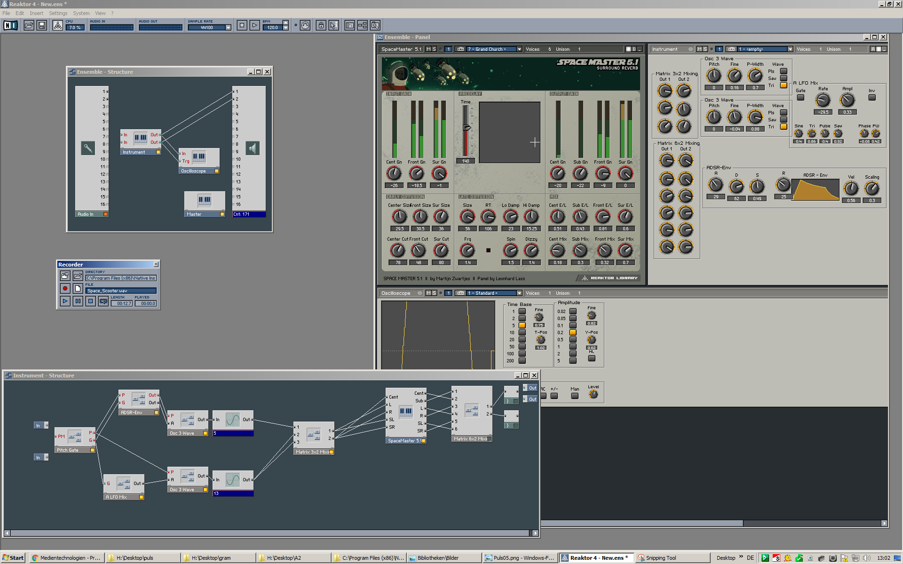Zwei Oszilatoren die jeweils durch ein Sinus Module durch gehen und durch den Effekt SpaceMaster5.1 ein Theremin Klang bekommen. Beim A-LFO-Mix haben wir eine geringe Rate genommen und ein geringen Amplitudenwert, um einen tieferen Klang zu erhalten und eine langsamere Frequenz.
wav Datei:
Hüllkurve Bild aus Samplitude
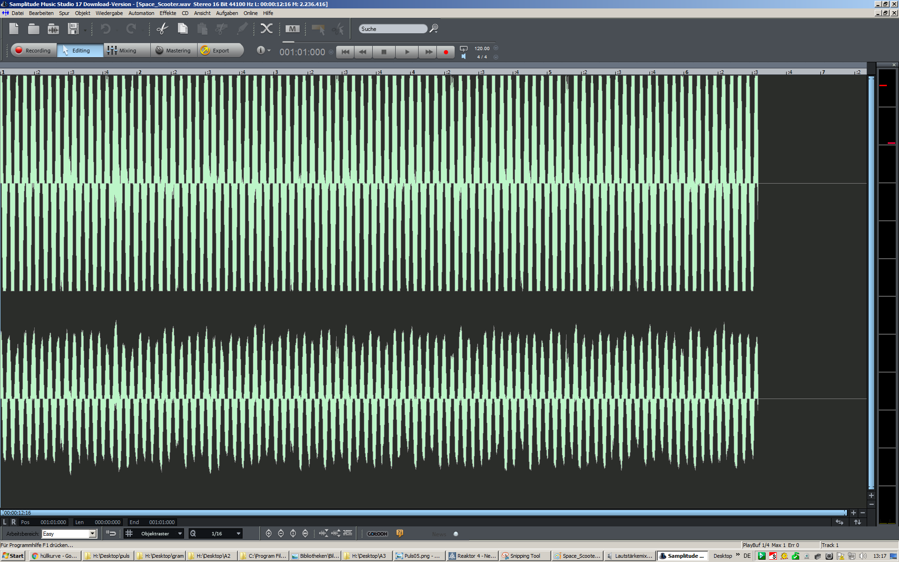